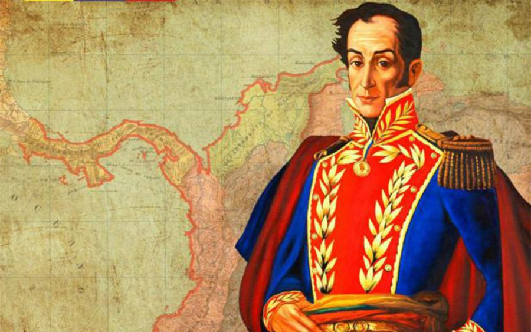
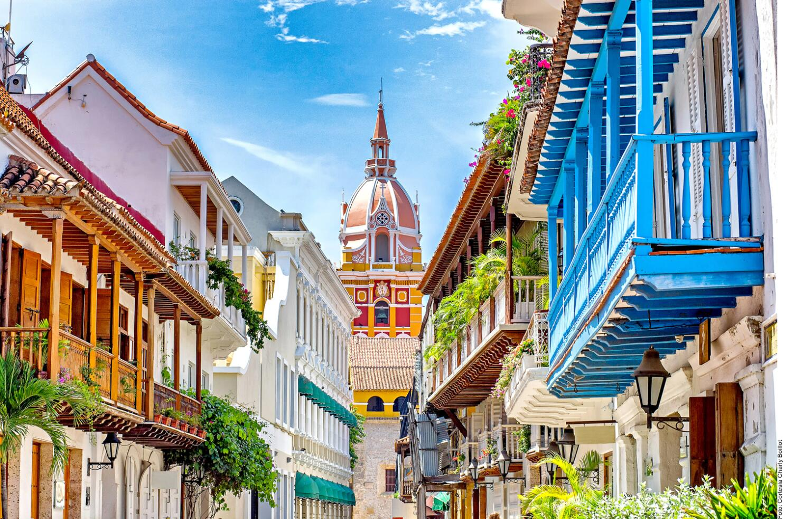
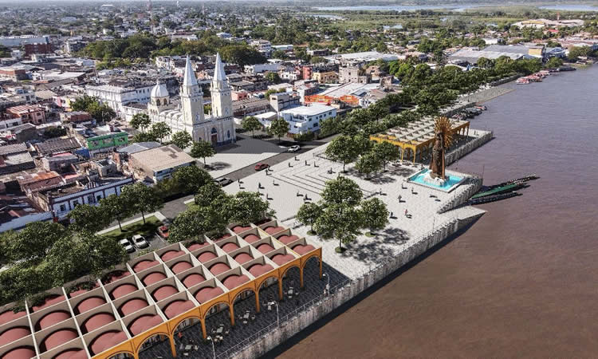

¿Qué fue la Ruta Libertadora?
La Ruta Libertadora fue el recorrido militar y estratégico que realizó Simón Bolívar junto a sus tropas durante la lucha por la independencia de Colombia. A través de esta ruta, Bolívar liberó territorios clave del dominio español entre 1812 y 1820. En el departamento de Bolívar, pasó por lugares como Cartagena, Mompox, Magangué y los Montes de María, donde organizó su ejército, obtuvo apoyo del pueblo y dirigió importantes acciones que contribuyeron al nacimiento de una nación libre.
La Ruta Libertadora
La Ruta Libertadora fue el recorrido militar y estratégico que realizó Simón Bolívar junto a sus tropas durante la lucha por la independencia de Colombia. A través de esta ruta, Bolívar liberó territorios clave del dominio español entre 1812 y 1820. En el departamento de Bolívar, pasó por lugares como Cartagena, Mompox, Magangué y los Montes de María.
La Ruta Libertadora en el Departamento de Bolívar
En el Departamento de Bolívar, la Ruta Libertadora marcó el paso decisivo de Simón Bolívar por territorios clave durante la lucha por la independencia. Ciudades como Cartagena, Magangué y Mompox fueron fundamentales para reorganizar sus tropas y ganar apoyo popular.
hechos importantes en la ruta libertadora
- Manifiesto de Cartagena:
Simón Bolívar llega a Cartagena tras la caída de la Primera República en Venezuela. Allí redacta el Manifiesto de Cartagena, donde expone la necesidad de unión entre las provincias para enfrentar a los realistas. Este texto se convierte en una guía ideológica para las futuras campañas libertadoras. - Apoyo popular en Mompox:
En Santa Cruz de Mompox, Bolívar recibe un apoyo masivo del pueblo. Recluta más de 400 hombres y declara el compromiso total de la ciudad con la independencia. Este respaldo fue tan importante que Bolívar pronunció su frase célebre:
“Si a Caracas debo la vida, a Mompox debo la gloria.” - Campaña del Magdalena
Bolívar inicia una ofensiva desde el río Magdalena, liberando pueblos como Magangué y El Banco. Este avance debilitó el control español sobre la región y permitió que los patriotas abrieran una ruta segura hacia el interior del país. Fue una campaña clave para ganar territorio y apoyo local.
Ubicaciones Clave de la Ruta Libertadora
- Cartagena: Punto de partida de Bolívar en Colombia. Aquí escribió el Manifiesto de Cartagena y reorganizó sus tropas para continuar la lucha.
- Magangué: Puerto estratégico sobre el río Magdalena, vital para la movilidad de tropas y provisiones durante la Campaña del Magdalena.
- Mompox: Ciudad que apoyó decididamente la causa libertadora. Bolívar formó aquí un ejército con más de 400 voluntarios.
- Montes de María: Zona montañosa usada como ruta alternativa por los patriotas. Fue clave para movilizarse hacia el interior evitando el control realista.
Línea del Tiempo
1812
Simón Bolívar llega a Cartagena de Indias exiliado tras la caída de la Primera República en Venezuela. En esta ciudad redacta el famoso Manifiesto de Cartagena, donde analiza las causas de los fracasos patriotas e impulsa la unión de las provincias neogranadinas para resistir al dominio español. Esta propuesta marca el inicio de su influencia en el proceso independentista en Nueva Granada.
1813
Desde Cartagena, Bolívar organiza una ofensiva militar conocida como la Campaña del Magdalena. Con el respaldo de líderes criollos, empieza a reunir armas, recursos y hombres dispuestos a luchar. Su objetivo es liberar el río Magdalena, una vía estratégica que conecta la costa con el interior del virreinato.
1813
Bolívar llega a Mompox, donde es recibido con entusiasmo. Allí pronuncia su famosa frase: "Si a Caracas debo la vida, a Mompox debo la gloria". Recluta más de 400 voluntarios decididos a unirse a su causa, consolidando una fuerza patriota que será clave en las campañas posteriores.
1813
Las tropas de Bolívar descienden por el río Magdalena, liberando progresivamente varios pueblos dominados por los realistas: Magangué, El Banco, Tamalameque y otros. Este avance asegura una ruta segura hacia el centro del país y fortalece el control patriota en la región.
1814
Durante su desplazamiento, Bolívar y sus tropas cruzan los Montes de María, una región estratégica de difícil acceso. Comunidades locales como El Carmen de Bolívar y San Jacinto ofrecen apoyo a los libertadores, brindando víveres, guías y refugio. Esta colaboración civil demuestra la importancia del respaldo popular en la campaña.
1815
Cartagena es sitiada por el general español Pablo Morillo con un poderoso ejército expedicionario. La ciudad resiste heroicamente durante más de tres meses, pero finalmente cae. Bolívar, ya exiliado, observa desde la distancia, aunque su legado e influencia aún se mantienen vivos entre los defensores patriotas.
1816–1818
Tras su exilio en Jamaica y Haití, Bolívar recibe apoyo del presidente haitiano Alexandre Pétion. Regresa a Nueva Granada para reorganizar sus fuerzas. Aunque concentra su acción en los Llanos Orientales y otras regiones, el Caribe y el Magdalena Medio continúan siendo fundamentales para el avance patriota y el abastecimiento de tropas.
1819
La Campaña Libertadora culmina con la victoria patriota en la Batalla de Boyacá, el 7 de agosto. Esta gesta final es el resultado de un largo proceso iniciado desde 1812 en la costa caribeña, donde Bolívar consolidó su visión y estrategia. El triunfo simboliza no solo la libertad del centro del país, sino el éxito de un proyecto que comenzó en tierras como Bolívar y Magdalena.
Agencia de Viajes: Liberating Path
Viaja con nosotros y descubre la Ruta Libertadora llevada a cabo por Simón Bolívar. Visita lugares históricos, revive los pasos del Libertador y sumérgete en la historia de Colombia mientras recorres ciudades como Cartagena, Mompox, Magangué y los Montes de María. Con nuestros planes personalizados podrás explorar fortalezas coloniales, caminos ancestrales y pueblos que aún conservan la memoria de la independencia. ¡Haz parte de una experiencia única donde el pasado cobra vida!

Nuestra Lista De Destinos
-
Cartagena de Indias:
Ciudad clave en el inicio de la Ruta Libertadora. Allí Bolívar escribió el Manifiesto de Cartagena y organizó las primeras tropas. Cuenta con un centro histórico amurallado lleno de fortalezas coloniales, plazas y sitios donde se gestó la independencia. Se destacan el Castillo de San Felipe, la Plaza de la Aduana, el Barrio Getsemaní y el Palacio de la Inquisición.
- Castillo de San Felipe de Barajas: El Castillo de San Felipe de Barajas es la fortaleza más imponente construida por los españoles en América. Se levanta sobre el cerro de San Lázaro y fue clave en la defensa militar de Cartagena durante los siglos XVII y XVIII. Con su sistema de túneles, garitas, cañones y pasadizos, permitía controlar los accesos terrestres y vigilar posibles ataques enemigos, especialmente piratas e invasores británicos.
- La Plaza de la Aduana: La Plaza de la Aduana es la más antigua y una de las más emblemáticas de Cartagena. Durante la época colonial, fue el centro administrativo y comercial más importante de la ciudad. Su nombre proviene de la Casa de la Real Aduana, un edificio majestuoso que dominaba la plaza y donde se controlaban las mercancías que entraban y salían del puerto.
- La Casa del Cabildo: La Casa del Cabildo, también conocida como el Cabildo de Cartagena, es uno de los edificios coloniales más representativos del centro histórico. Construido en el siglo XVII, este lugar funcionaba como la sede del gobierno local durante el Virreinato, y fue allí donde se tomaron decisiones fundamentales en la historia de Colombia.
- Las Bóvedas: Las Bóvedas son una impresionante construcción militar situada entre los fuertes de Santa Clara y Santa Catalina, en el extremo norte del centro amurallado de Cartagena. Fueron edificadas a finales del siglo XVIII por los ingenieros Antonio de Arévalo y Juan de Herrera y Sotomayor, como parte de las defensas de la ciudad.
- Claustro de San Pedro Claver: El Claustro de San Pedro Claver, ubicado en el corazón del centro histórico de Cartagena, es un monumento religioso y cultural de gran importancia en la historia de Colombia y del Caribe. Este edificio fue construido en el siglo XVII por la Compañía de Jesús, y está íntimamente ligado a la vida y obra de San Pedro Claver, un sacerdote jesuita que dedicó su vida a defender los derechos y la dignidad de los esclavos africanos que llegaban al puerto de Cartagena.
- Puerta del Reloj y Plaza de los Coches: La Puerta del Reloj, también conocida como Boca del Puente, es el principal acceso al centro amurallado de Cartagena. Se distingue por su emblemática torre con reloj, añadida en el siglo XIX, que se ha convertido en uno de los símbolos más representativos de la ciudad.
- Cuartel de Ballesteros: El Cuartel de Ballesteros fue una de las instalaciones militares más importantes de Cartagena durante la época colonial y las guerras de independencia. Construido en el siglo XVIII, este edificio funcionaba como alojamiento para las tropas españolas encargadas de la defensa de la ciudad.
- Barrio Getsemaní: El Barrio Getsemaní fue uno de los primeros sectores populares en levantarse contra el dominio español, convirtiéndose en un símbolo de resistencia y lucha independentista. A diferencia de los barrios coloniales dominados por la élite criolla, Getsemaní era habitado por artesanos, obreros, comerciantes y afrodescendientes, quienes jugaron un papel activo durante los movimientos revolucionarios.
-
Santa Cruz de Mompox:
Santa Cruz de Mompox, fundada en 1537, fue una de las primeras ciudades de la región en declarar su independencia de la corona española, en 1810. Bolívar la llamó "la ciudad donde empezó la libertad del Nuevo Reino de Granada", ya que allí recibió apoyo decisivo para su campaña libertadora, incluyendo reclutas y provisiones.
- Plaza de la Libertad: La Plaza de la Libertad es uno de los lugares más emblemáticos de Mompox. Antiguamente conocida como Plaza Mayor, fue escenario de importantes acontecimientos políticos durante la época de la independencia. Aquí se proclamó la independencia de Mompox el 6 de agosto de 1810, convirtiéndose en uno de los primeros territorios del Virreinato de la Nueva Granada en liberarse del dominio español. Esta decisión fue fundamental para inspirar otros movimientos independentistas en la región del Magdalena Medio y motivó a Simón Bolívar a contar con el apoyo de los momposinos en su lucha.
- Iglesia de Santa Bárbara: La Iglesia de Santa Bárbara es uno de los templos más icónicos de Colombia y símbolo arquitectónico de Mompox. Construida en el siglo XVII, destaca por su singular campanario con balcón de madera, único en América Latina. Su mezcla de estilos coloniales, mudéjares y barrocos la convierten en una joya patrimonial del país. Durante la lucha independentista, Mompox era un centro fervoroso de actividad patriota, y la Iglesia de Santa Bárbara fue testigo de reuniones secretas, arengas y actos religiosos que acompañaban los pasos hacia la libertad.
- Casa de los Apóstoles: La Casa de los Apóstoles es una de las construcciones más emblemáticas de Mompox. Su nombre proviene de las esculturas de los doce apóstoles que decoran su fachada, un rasgo único en la arquitectura colonial religiosa de Colombia. Esta casa no solo destaca por su belleza, sino también por su valor simbólico y cultural.
- Malecón de Mompox: El Malecón de Mompox, situado a orillas del río Magdalena, es uno de los lugares más emblemáticos y apacibles de esta ciudad histórica. Durante la época de la independencia, fue un punto estratégico para la navegación y el transporte de tropas y provisiones. El río era la principal vía de comunicación entre el interior del país y la costa, lo que convirtió a Mompox en una ciudad clave en la campaña libertadora.
- Cementerio Colonial: El Cementerio Colonial de Mompox, fundado en el siglo XIX, es uno de los lugares más emblemáticos y cargados de simbolismo de la ciudad. Aunque su uso se volvió común después de la época independentista, muchas de las familias que apoyaron la causa libertadora están enterradas allí, lo que convierte al cementerio en un sitio de memoria nacional.
- Casa 1736 (Museo): La Casa 1736, también conocida como Museo Casa 1736, es una de las edificaciones coloniales más representativas de Mompox. Su nombre hace referencia al año en que fue construida, y desde entonces ha sido testigo de siglos de historia, evolución urbana y cultura momposina.
- Calle Real del Medio: La Calle Real del Medio es la vía más emblemática de Santa Cruz de Mompox. Antiguamente fue la calle principal de la ciudad durante la época colonial y, aún hoy, conserva su trazado original y el encanto de sus casonas con balcones de hierro forjado, grandes portones y fachadas blancas. Esta calle fue testigo de momentos clave en la historia de la independencia. A lo largo de ella se encuentran varios edificios históricos como iglesias, plazas y antiguas residencias, algunas de las cuales alojaron reuniones patriotas. Es considerada una especie de “museo al aire libre” por su riqueza arquitectónica y ambiente histórico.
- Iglesia de San Francisco: Centro de almacenamiento de pertrechos patriotas.
-
Magangué:
Puerto estratégico sobre el río Magdalena, utilizado por Bolívar como punto de embarque y desembarque de tropas y provisiones. Su posición lo hizo clave en el movimiento patriota. Actualmente, es famoso por su malecón, tradiciones ribereñas y paisajes náuticos sobre el Magdalena.
 -
Montes de María:
Cordillera baja y espesa que fue usada como vía de escape y de ataque por las tropas patriotas. Su vegetación sirvió de escondite y defensa. Hoy en día, es reconocida por su riqueza cultural, música autóctona (como la gaita) y rutas ecológicas que combinan historia y naturaleza.
- San Jacinto: Pueblo tradicional de músicos y artesanos. Fue clave como refugio y enlace entre campamentos patriotas.
- El Carmen de Bolívar: Punto estratégico por su ubicación. Desde allí se coordinaron varios movimientos patriotas.
- Mirador de los Montes: Ubicación elevada desde donde se vigilaban rutas realistas y se planificaban emboscadas.
-
San Juan Nepomuceno:
Importante paso entre Mompox y los Montes de María. Las tropas libertadoras cruzaron esta zona rumbo al interior. Se conservan rutas coloniales, vestigios de haciendas patriotas y una fuerte tradición oral sobre la guerra de independencia. Ideal para el turismo histórico y rural.
- Ruta Colonial de los Patriotas: Camino empedrado que conectaba con los pueblos vecinos y sirvió de paso para Bolívar.
- Antigua Hacienda La Candelaria: Refugio y punto de reunión de insurgentes durante la campaña.
- Parque Principal: Escenario de actos conmemorativos y reuniones clave en época independentista.
-
El Banco (Magdalena):
Fue vital en la Campaña del Magdalena por ser un nodo fluvial entre la costa y el interior. Bolívar y otros líderes lo usaron para transportar mensajes y tropas. Además de su papel en la historia, hoy destaca por su vida musical vibrante (origen de la cumbia) y su feria cultural.
- Malecón del Río Magdalena: Embarcadero desde donde partían tropas y mercancías hacia otras zonas del país.
- Monumento a la Cumbia: Representa el valor cultural y el espíritu del pueblo en la historia del Caribe.
- Centro Cultural El Banco: Espacio donde se conserva la memoria oral y musical de la región.
-
San Basilio de Palenque:
Aunque su lucha fue anterior a la independencia oficial, Palenque apoyó la causa con conocimiento del terreno y resistencia popular. Es el primer pueblo libre de América, fundado por esclavizados que escaparon. Hoy es un centro de identidad afrocolombiana, con lengua, medicina y cultura propias.
- Plaza Benkos Biohó: Espacio principal del pueblo que honra al líder libertador y símbolo de resistencia.
- Escuela de Lengua Palenquera: Lugar donde se enseña y protege el criollo palenquero, lengua viva del pueblo.
- Centro Cultural de Palenque: Promueve el arte, la música y la memoria de su lucha ancestral por la libertad.
¿Quien Fue Simon Bolivar?
Simón Bolívar

Simón Bolívar fue un líder militar, político y revolucionario venezolano. Se le conoce como El Libertador por encabezar las campañas que liberaron a Venezuela, Colombia, Ecuador, Perú y Bolivia del dominio español.
Datos Sobre Simón Bolívar
- Nombre completo: Simón José Antonio de la Santísima Trinidad Bolívar y Palacios
- Lugar de nacimiento: Caracas, Capitanía General de Venezuela
- Fecha de muerte: 17 de diciembre de 1830
- Lugar de muerte: Santa Marta, Colombia
Biografia De Simon Bolivar
Simón José Antonio de la Santísima Trinidad Bolívar y Palacios, conocido como Simón Bolívar, nació el 24 de julio de 1783 en Caracas, en la Capitanía General de Venezuela (actual Venezuela). Fue un líder militar, político y revolucionario clave en la independencia de varios países de América del Sur del dominio español. Nació en una familia rica y aristocrática, pero quedó huérfano a una edad temprana: su padre murió cuando él tenía tres años y su madre cuando tenía nueve. Su educación quedó en manos de tutores, entre ellos el pensador Simón Rodríguez, quien lo influenció con ideas de libertad y justicia basadas en la Ilustración. En su juventud, Bolívar fue enviado a España para continuar su formación. Allí se casó con María Teresa del Toro, pero ella murió poco después de llegar a Venezuela. Esta tragedia lo marcó profundamente. Después, viajó por Europa y, en Roma, juró liberar a América del dominio español, inspirado por la Revolución Francesa y los ideales republicanos. Regresó a Venezuela en 1807, justo cuando crecían los movimientos de independencia. Participó en la Primera República de Venezuela, que cayó en 1812. Tras ese fracaso, escribió el Manifiesto de Cartagena, donde analizó las causas de la caída de la república y propuso una guerra total contra los realistas. Su liderazgo empezó a destacar, y en 1813 inició la Campaña Admirable, que le permitió liberar territorios venezolanos y ser proclamado “El Libertador”. Desde Cartagena de Indias, Bolívar organizó la Campaña del Magdalena, liberando ciudades del norte de Colombia. Posteriormente, lideró la Campaña Libertadora de los Andes en 1819, cruzando las montañas con su ejército en una hazaña épica que culminó en la Batalla de Boyacá, asegurando la independencia de la Nueva Granada (actual Colombia). También participó en la liberación de Ecuador, Perú y Bolivia, país que lleva su nombre en su honor. Bolívar no solo fue un libertador militar, también fue un político visionario. Intentó crear una gran nación unificada: la Gran Colombia, integrada por Colombia, Venezuela, Ecuador y Panamá. Fue su presidente, pero los conflictos internos y regionalismos debilitaron su sueño de unidad. En 1826, escribió la Carta de Jamaica, donde expresó su visión sobre América Latina, sus desafíos y su futuro. Hacia el final de su vida, Bolívar estaba desilusionado. Fue traicionado por algunos de sus aliados y rechazado por sectores que antes lo apoyaban. Enfermo y cansado, renunció a la presidencia y se preparaba para irse al exilio en Europa, pero murió antes de poder hacerlo. Falleció el 17 de diciembre de 1830 en Santa Marta, Colombia, a los 47 años. Sus últimas palabras reflejan su tristeza y decepción con el destino de América: “Si así llueve, que no escampe”. A pesar de todo, su legado perdura hasta hoy como uno de los grandes libertadores de la historia. Fue clave en la independencia de seis países: Venezuela, Colombia, Ecuador, Perú, Bolivia y Panamá, y su nombre está presente en calles, monumentos, ciudades e incluso una nación entera. Su figura simboliza la lucha por la libertad en América Latina.
Aliados Y Enemigos
esta es la lista de los enemigos y aliados de simon bolivar ordenados cronologicamente segun su aparicion
Aliados:
- Francisco de Miranda (1810–1812) Precursor de la independencia. Bolívar lo apoyó al inicio, pero terminaron enfrentados cuando Miranda firmó la capitulación ante los realistas.
- Juan José Rondón (desde 1819) Héroe de la Batalla del Pantano de Vargas. Comandó una carga decisiva que ayudó a ganar la Campaña Libertadora.
- José Félix Ribas (1813–1815) Líder patriota venezolano. Derrotó a los realistas en la Batalla de La Victoria y defendió la Segunda República.
- José Antonio Páez (desde 1816) Caudillo llanero fundamental en la independencia de Venezuela. Fue clave en la Batalla de Carabobo.
- Antonio José de Sucre (desde 1817) Mano derecha de Bolívar. Comandó batallas en el sur como Pichincha y Ayacucho, asegurando la independencia de Perú y Bolivia.
- Pedro Camejo ("Negro Primero") (1817–1821) Afrodescendiente valiente que luchó en varias batallas. Murió en Carabobo y es símbolo de igualdad y coraje.
- Francisco de Paula Santander (desde 1819) Líder granadino que apoyó la Campaña Libertadora. Gobernó Nueva Granada mientras Bolívar luchaba en el sur.
- Manuela Sáenz (desde 1822) Compañera sentimental y política de Bolívar. Lo apoyó activamente y lo salvó de un atentado en 1828 en Bogotá.
Enemigos
- La Corona Española (desde 1810) Principal oponente de Bolívar. Representaba el poder colonial que los patriotas buscaban eliminar.
- José Tomás Boves (1813–1814) Líder realista que organizó a las clases bajas para combatir a los patriotas en Venezuela con extrema violencia.
- Pablo Morillo (1815–1820) General español que lideró la Reconquista. Sitió Cartagena y lideró campañas en Nueva Granada contra los patriotas.
- Francisco Tomás Morales (1815–1823) Sucedió a Morillo como comandante realista. Fue derrotado en batallas clave en Venezuela.
- Juan José Flores (enemistad desde 1828) Aunque luchó junto a Bolívar, luego se volvió opositor en Ecuador, contribuyendo a la caída de la Gran Colombia.
- Federalistas y caudillos regionales (desde 1826) Líderes como Santander, Páez (ya enemistado), y otros que se opusieron a la centralización del poder de Bolívar y favorecieron la fragmentación de la Gran Colombia.